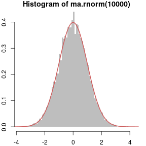
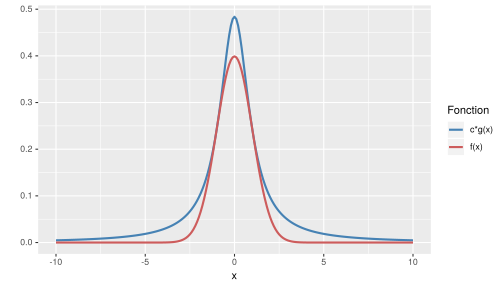

- Pour interpréter des données de biostatistique, on peut avoir recours à de la simulation
Élaboration puis simulation d'un modèle, et confrontation avec des données biologiques
Nécessite des compétences informatiques particulières :
Comment simuler efficacement un modèle?
Comment "produire la hasard" par ordinateur2 objectifs :
Apprentissage d'un langage de programmation (R)
Des techniques utiles pour la simulation
Simulations en biostatistique
M1 Santé Publique - 2016/2017
Cervin Guyomar
cervin.guyomar@irisa.fr
Introduction
Introduction au langage R
R
Un langage informatique et un environnement pour la statistique
Caractéristiques :
- Libre, gratuit, multi-plateformes
- Un langage de programmation
- Des fonctions de haut niveau dédiées à la statistique / la visualisation
- Utilisé dans le monde académique, en entreprise
- Installation : www.r-project.org
Apprentissage de R
- Première session R
- Structures de données
- Scalaires
- Vecteurs
- Matrices
- Listes
- data.frame
- Algorithmique
- Structures de contrôle
- Fonctions
- Représentations graphiques
Première session R
Console R : une ligne de commande
"Mode calculatrice"
2+2## [1] 4Une fonction s'utilise ainsi :
nom.fonction(argument1,argument2,...)sqrt(3)## [1] 1.732051Important : obtenir l'aide d'une fonction :
?sqrt ?roundOn peut stocker des données dans des objets dans la mémoire de l'ordinateur
ma.variable <- sqrt(3)
Environnement de travail
- Répertorie courant : répertoire dans lequel travaille R (chargement de jeux de données...)
getwd() # Affiche le répertoire courant
setwd("C:/Users/cguyomar/Documents/monprojetR") # Change le répertoire courant
L'éditeur de code
La ligne de commande ne suffit pas pour écrire des programmes
- On écrit du code à l'aide d'un éditeur de texte dans un fichier source (.R)
- R exécute ce code dans l'ordre
#Pour insérer des commentaires et mieux comprendre son code
# mon premier programme R
# 12 Septembre 2016
# Cervin Guyomar
input <- readline('Entrez une valeur') # On demande une valeur à l'utilisateur
print(sqrt(input)) # On retourne la racine carrée de cette valeur
Quelques bonnes pratiques
- Ecrivez du code commenté (mais pas trop)
- Une ligne = une instruction (pas 2)
print(sqrt(readline("Entrez une valeur"))) # À éviter
- Aérez votre code
- Indentez votre code
Les scalaires
Une variable peut être de classe:
- entier (integer)
- réel (numeric)
- logique (
TRUEouFALSE) - facteur (variable qualitative)
- chaine de caractère
Affectation avec l'opérateur
<-(ou=)On peut vérifier la classe de tout objet avec la fonction
class
# Numérique (numeric):
value <- cos(3+7)
class(value)
# Logique (logical)
a <- 2
b <- 3
booleen <- b < a
class(booleen)
# Chaines de caractères (character)
chaine <- "Une chaine de caractères"
class(chaine)
Exercices sur les scalaires
- Créez une première chaine de caractère qui contiendra "Hello" et une seconde qui contiendra "World !"
- Affichez la première
- Affichez la en majuscules dans la console
- Concaténez les deux chaines et stockez les dans une nouvelle variable
- Affichez le nombre de caractères que contient cette nouvelle chaine
- Récupérez en les 5 premiers caractères
Fonctions utiles : print, cat, toupper, paste, nchar, substring
#1)
chaine1 <- "Hello"
chaine2 <- "World !"
#2)
chaine1 # ou
print(chaine1) # ou
cat(chaine1)
#3)
toupper(chaine1)
#4)
ma.chaine <- paste(chaine1,chaine2,sep="")
#5)
nchar(ma.chaine)
#6)
substring(ma.chaine,1,5)
Conversion de variables
Il est parfois nécessaire de convertir une variable d'une classe à une autre
On utilise les fonctions as.integer, as.numeric, as.factor, as.character...
as.integer(12.9)
## [1] 12
as.numeric("neuf")
## Warning: NAs introduced by coercion
## [1] NA
as.numeric("9")
## [1] 9
as.factor("modalité1")
## [1] modalité1
## Levels: modalité1
Conversion de variables
Exercice : Théorème de Pythagore
Réaliser un programme qui demande à l'utilisateur 2 longueurs d'un triangle rectangle, et retourne celle de l'hypothèé use
Fonctions utiles : readline, print, ^ (opérateur exposant)
Solution
a <- readline('Entrez la première valeur')
b <- readline('Entrez la seconde valeur')
class(a) # a et b sont des chaines de caractères :
# impossible de réaliser des opérations avec des caractères
a <- as.numeric(a) # On les convertit en numérique
b <- as.numeric(b)
res <- sqrt(a^2+b^2) # On calcule la longueur de l'hypothénuse
res <- paste("L'hypothénuse a pour longueur : ",res) # Le nombre est converti automatiquement en chaine de caractères
print(res)
Les vecteurs
Une suite d'éléments de même nature (que des nombres, que des chaines de caractères...)
Construction
vec <- c(1,3.8,log(4)) # c : fonction de concaténation de plusieurs éléments
vec2 <- rep("licorne",5) # fonction rep : répète un élément plusieurs fois
vec3 <- rep(c("licorne","papillon"),each=2,times=3)
vec4 <- seq(0,1,0.1) # Séquence des valeurs de 0 à 1 par pas de 0.1
Ajouter un élément à un vecteur
vec <- c(vec,0)
vec <- c(1:4,"toto") # Commentez
Accéder aux éléments d'un vecteur
vec[1] # Première valeur
vec[-c(2,4)] # Tout sauf les valeurs 2 et 4
vec4[vec4 > 0.5] # Commentez
Fonctions utiles pour les vecteurs
vec <- c(5,12,1,5,9,1)
which(vec < 6) # Indices des éléments < 6
## [1] 1 3 4 6
which.min(vec)
## [1] 3
which.max(vec)
## [1] 2
order(vec)
## [1] 3 6 1 4 5 2
sort(vec) ; vec[order(vec)] # Éléments triés
## [1] 1 1 5 5 9 12
## [1] 1 1 5 5 9 12
sample(vec,5) # 5 éléments au hasard sans remise
## [1] 12 9 1 5 1
sample(vec,replace=T,5) # avec remise
## [1] 1 1 1 12 1
Exercice sur les vecteurs
Placez les entiers de 1 à 5 dans un vecteur (
1:5)
Ajoutez y les nombres 7 et 8.2
Donner leurs carrés (^)Créer un vecteur contenant 3 fois tous les entiers de 1 à 4
Créer un vecteur contenant 1 fois "A", 2 fois "B", 3 fois "C", etc.
Donnez sa longueurCréer un vecteur contenant 100 identifiants de patients sous la forme "patient_1_A".
Les identifiants sont uniques et compris entre 1 et 1000, la lettre est tirée au hasard (avec remise)
Rangez les dans l'ordre des identifiants
Fonctions utiles : c(), rep(), LETTERS, paste(), sample()
Solution
# 1)
vec <- 1:5
vec <- c(vec,7,8.2)
vec^2
# 2)
vec <- rep(1:4,each=3) # 1,1,1,2,2,2...
vec <- rep(1:4,times=3) # 1,2,3,4,1,2....
# 3)
vec <- rep(LETTERS,times=1:26)
length(vec)
# 4)
num <- sort(sample(1:1000,100))
lettre <- sample(LETTERS,100,replace = T)
id.patients <- paste("patient",num,lettre,sep="_")
Exercice 2 sur les vecteurs
Créez les vecteurs suivants, que vous appellerez y1, y2, y3 et y4, avec d = 4 et e = 12 :
y1 : une suite d’indices de 1 à 30.
y2 : trois fois l’élément d, puis trois fois d au carré, puis trois fois la racine de d.
y3 : la séquence de 1 à 20 avec un pas de deux.
y4 : 10 chiffres compris entre 1 et 30 avec un intervalle constant.
Fonctions utiles : seq, rep
Solution
y1 <- 1:30
d <- 4
e <- 12
y2 <- c(rep(y1,times=3),rep(d^2,3),rep(sqrt(d),3))
y3 <- seq(1,20,by = 2)
y4 <- seq(1,30,length.out = 10)
Les facteurs
Une classe de données permettant de stocker les modalités d'une variable qualitative
cheveux <- factor(c("blond","brun","blond","roux","brun","brun"))
levels(cheveux)
## [1] "blond" "brun" "roux"
levels(cheveux) <- c(levels(cheveux),"chatain")
table(cheveux)
## cheveux
## blond brun roux chatain
## 2 3 1 0
Les matrices
Un vecteur auquel on affecte des dimensions (nombre de colonnes et de lignes)
Construction
mat <- matrix(1:20,ncol=5)
mat
## [,1] [,2] [,3] [,4] [,5]
## [1,] 1 5 9 13 17
## [2,] 2 6 10 14 18
## [3,] 3 7 11 15 19
## [4,] 4 8 12 16 20
dim(mat) # Dimensions de la matrice
## [1] 4 5
# Voir aussi ncol et nrow
Extraction
first.col <- mat[,1]
sec.row <- mat[2,]
element <- mat[3,4]
mat[mat[,1] > 2,] # Commentez
## [,1] [,2] [,3] [,4] [,5]
## [1,] 3 7 11 15 19
## [2,] 4 8 12 16 20
Fonctions utiles pour les matrices
mat <- matrix(1:12,ncol=4)
t(mat) # Transposée
colSums(mat) ; rowSums(mat) # Somme par lignes/colonnes
print(mat)
print(dim(mat)) # Dimensions de la matrice
Fonction apply
Applique une fonction donnée à chaque ligne/colonne et retourne les résultats
apply(mat,1,mean) # Moyenne de chaque ligne (même effet que colMeans)
## [1] 9 10 11 12
apply(mat,2,max) # Maximum de chaque colonne (même effet que rowMeans)
## [1] 4 8 12 16 20
Exercice sur les matrices
- Créer la matrice A suivante : \[\begin{array} {rrr} -3 & 5 & 6 \\\ -1 & 2 & 2 \\\ 1 & -1 & -1 \end{array} \]
- Afficher la dimension de A, son nombre de colonnes, son nombre de lignes et sa longueur ;
- Extraire la seconde colonne de A, puis la première ligne ;
- Extraire l’élément en troisième position à la première ligne ;
- Extraire la sous-matrice de dimension 2 × 2 du coin inférieur de A
- Calculer la somme des colonnes puis des lignes de A ;
- Rajouter le vecteur 1 2 3 à droite de la matrice A et stocker le résultat dans un objet appelé B ;
- Retirer la première et la troisième ligne de B ;
- Ajouter le scalaire 10 à A ;
- Diviser tous les éléments de la matrice A par 2 ;
Solution
# 1)
A <- matrix(c(-3,-1,1,5,2,-1,6,2,-1),nrow=3)
# 2)
dim(A)
ncol(A)
nrow(A)
length(A)
# 3)
A[,2]
A[1,]
# 4)
A[1,3]
# 5)
A[2:3,2:3]
# 6)
colSums(A) # équivalent à apply(A,2,sum)
rowSums(A) # équivalent à apply(A,1,sum)
# 7)
B <- cbind(A,1:3)
# 8)
B <- B[-c(1,3),]
# 9)
A <- A + 10
# 10)
A <- A/2
Exercice 2 sur les matrices
Créez 2 matrices de votre choix (dimensions et valeurs)
Calculez le premier terme du produit matriciel de ces 2 matrices.
Créer une matrice contenant 10 fois la ligne "1, 2, 3", puis 1à fois la ligne "4,5,6"
Créez une matrice avec en colonnes 3 matières et en ligne 20 élèves, et contenant pour chaque élève et matière une note prise au hasard entre 0 et 20. Nommez colonnes et lignes (noms de matière et identifiants de type élève1 élève2...)
Donnez la moyenne et la médiane pour chaque matière
Ajoutez une colonne calculant la moyenne pondérée par les coefficients de votre choix. (utilisez éventuellement la fonctionsweepsi vous voulez bien faire)
Solution
# 1)
mat1 <- matrix(1:9,ncol=3)
mat2 <- matrix(3:11,ncol=3)
# 2)
print(sum(mat1[1,] * mat2[,1]))
print((mat1 %*% mat2)[1,1])
# 3)
vec1 <- rep(1:3,times=10)
vec2 <- rep(4:6,times=10)
mat1 <- matrix(vec1,ncol=3)
mat2 <- matrix(vec2,ncol=3)
mat <- rbind(mat1,mat2)
# 4)
notes <- sample(1:20,size = 60,replace=T)
notes <- matrix(notes,ncol=3)
noms.lignes <- paste0("élève",1:20)
rownames(notes) <- noms.lignes
colnames(notes) <- c("Francais","Maths","Bio")
## Calcul de la moyenne pondérée
coef <- c(1,2,3)
# Avec sweep :
notes.coef <- sweep(notes,2,coef,FUN="*") # On a multiplié chaque colonne par son coefficient
moyennes <- rowSums(notes.coef)/sum(coef)
notes <- cbind(notes,moyennes)
colnames(notes)[4] <- "Moyenne pondérée"
# Sans sweep
# moyennes <- (notes[,1]*coef[1]+notes[,2]*coef[2]+notes[,3]*coef[3])/sum(coef)
# notes <- cbind(notes,moyennes)
# colnames(notes)[4] <- "Moyenne pondérée"
## Moyenne et médiane par matière
colMeans(notes)
apply(notes,2,median)
Les listes
Un "fourre-tout" : objets de différents types : scalaires, matrices, caractères, numériques, listes...
Construction
ma.liste <- list(12,"Licorne",1:10)
ma.liste
## [[1]]
## [1] 12
##
## [[2]]
## [1] "Licorne"
##
## [[3]]
## [1] 1 2 3 4 5 6 7 8 9 10
Les listes
Un "fourre-tout" : objets de différents types : scalaires, matrices, caractères, numériques, listes... Les éléments peuvent être nommés (ou pas)
Construction
ma.liste <- list(12,"Licorne",1:10)
ma.liste <- list(nombre = 12,chaine = "Licorne",matrice = matrix(1:12,nrow=3)) # éléments nommés
Accès aux éléments
ma.liste[[1]]
## [1] 12
ma.liste$chaine
## [1] "Licorne"
Fonctions apply sur des listes
Exécute une fonction sur chaque élément de la liste et retourne le résultat
ma.liste <- list(12,"Licorne",1:10)
lapply(ma.liste,FUN=length) # Résultats sous forme de listes
## [[1]]
## [1] 1
##
## [[2]]
## [1] 1
##
## [[3]]
## [1] 10
sapply(ma.liste,length) # Si possible, simplifie les résultats sous forme de vecteur ou matrice
## [1] 1 1 10
# D'autres fonctions : tapply, mapply...
Les data.frame
Forme particulière de liste : adaptée aux jeux de données Individus x variable
v1 <- c("H","F","F","H","F")
v2 <- c(25,30,18,55,40)
v3 <- c(175,152,164,160,159)
data <- data.frame(sexe=v1,age=v2,taille=v3)
data[,1]
## [1] H F F H F
## Levels: F H
data$sexe
## [1] H F F H F
## Levels: F H
data[2,]
## sexe age taille
## 2 F 30 152
Fonctions utiles pour les data.frame
summary(data) # Informations essentielles sur les différentes variables présentes
nrow(data) ; ncol(data) ; dim(data) # Dimensions
colnames(data) ; rownmaes(data) # Noms de lignes/colonnes
data['nomligne1',] ; data[,"nomcol2"] ; data$nomcol2
# Possible de sélectionner des lignes/colonnes par leur nom
Aggrégation de lignes
aggregate(data[,2:3],by=list(data$sexe),FUN=mean) # Age moyen pour chaque sexe
## Group.1 age taille
## 1 F 29.33333 158.3333
## 2 H 40.00000 167.5000
Les fonctions apply s'appliquent comme sur les matrices (apply) ou les listes (lapply,sapply...)
Exercices sur les data.frame
Chargez le jeu de données situé à l'adresse http://math.agrocampus-ouest.fr/infoglueDeliverLive/digitalAssets/73505_decath.txt
Fonction read .table
Options utiles :
file: emplacement du fichier à liresep: Séparateur de champs (colonnes). Souvent;,,ou\t(tabulation)dec: Séparateur décimal..ou,header: Présence ou non d'un en tête avec les noms de colonnesrow.names: Numéro de la colonne contenant les noms de ligne (NAsinon)
Exercices sur les data.frame
Solution : decat <- read.table("http://math.agrocampus-ouest.fr/infoglueDeliverLive/digitalAssets/73505_decath.txt",header=T,sep="\t",row.names=1)
Exercice sur les data.frame
Affichez un résumé du jeu de données. Décrire ce qu'il contient
Quel est le meilleur temps en 1500m ?
Donnez le nombre d'athlètes ayant participé à chaque compétition, et comparez les nombres de points marqués dans les 2 compétitions
Donnez les résultats du francais Romain Barras
Récupérez les performances des athlètes ayant réalisé plus de 8500 points
Solution
decathlon <- read.table("http://math.agrocampus-ouest.fr/infoglueDeliverLive/digitalAssets/73505_decath.txt",header=T,sep="\t",row.names=1)
# 1)
summary(decathlon)
# 2)
min(decathlon$`1500m`)
# 3)
table(decathlon$Competition)
aggregate(decathlon$Points,by=list(decathlon$Competition),FUN = summary)
# Ou :
summary(decathlon[decathlon$Competition=='Decastar',]$Points)
summary(decathlon[decathlon$Competition=='OlympicG',]$Points)
# 4)
decathlon['BARRAS',]
# 5)
decathlon[decathlon$Points>8500,]
Algorithmique
Introduction à R
Les fonctions
On a utilisé jusqu'ici des fonctions intégrées à R
Mais on peut créer nos propres fonctions.
Intérêts :
- Factorisation du code : On peut réutiliser le même code à plusieurs endroits
- Lisibilité : On "cache" les détails du programme
- Structuration : on décompose un problème en plusieurs étapes plus simples
Créer ses fonctions
2 Étapes :
- Définir une fonction. "L'apprendre" à R
- L'appeler
ma.fonction <- function(argument1=defaut1,argument2,argument3...){
# Opérations
# Tout ce qui se passe ici n'a aucun effet en dehors de la fonction
return(resulat)
}
res.fonction <- ma.fonction(arg1,arg2,arg3...)
- Veiller à ne pas utiliser de variables exterieures à la fonction sans les mettre en argument
- Pour retourner plusieurs résultats, il faut les mettre dans une liste
Exercices sur les fonctions
Exercice 1 : Écriver une fonction qui retourne le périmètre, puis le périmètre et l'aire d'un rectangle
Transformez la fonction pour qu'elle puisse faire la même chose pour un carré, sans rentrer les 2 longueurs
Exercice 2 : Écrivez une fonction qui prend en entrée une matrice et qui divise par 2 toutes les valeurs supérieurs à 5
# 1)
calc.aire <- function(l,L=l){
perimetre <- 2*l+2*L
aire <- l*L
return(list(perimetre=perimetre,aire=aire))
}
# 2)
mat.transform <- function(mat){
mat[mat > 5] <- mat[mat > 5]/2
return(mat)
}
Des structures conditionelles
Si condition
alors operation
En langage R :
value <- as.numeric(readline())
if (value > 0){
print("le nombre donné est positif")
}
Des structures conditionelles
Si condition
alors operation
Si autre condition
alors operation
Sinon
alors operation
En langage R :
value <- as.numeric(readline())
if (value > 0){
print("le nombre donné est positif")
} else if (value == 0){
print("Le nombre donné est nul")
} else {
"Le nombre donné est négatif"
}
Opérateurs logiques
| Opérateur | Fonction |
|---|---|
> (<) |
Strictement supérieur (inférieur) |
>= <= |
Supérieur (inférieur) |
== |
égal |
!condition |
inverse |
&& |
et |
| ` | |
%in% |
Appartenance |
Exercice
Écrivez une fonction qui prend en entrée un age, et renvoie si il correspond à un personne mineure ou majeure.
Bonus : Écrivez une fonction qui réaliser la même tâche, avec une date en entrée. Voir Sys.Date() et as.Date()
is.majeur <- function(age){
if (!is.numeric(age)){
cat("Entrez l'age au format numérique")
return(NULL)
} else{
if (age >= 18){
return(TRUE)
} else {
return(FALSE)
}
}
}
is.majeur <- function(date_naissance){
# On essaye de vérifier que le format de la date est le bon
if (is.character(date_naissance)==FALSE){
cat("Entrez une date au format année-mois-jour ou année/mois/jour")
return(NULL)
} else {
date.split <- strsplit(date_naissance,split="")[[1]] # 3 conditions à vérifier
if (nchar(date_naissance) != 10 || # exactement 10 caractères
!(date.split[5] %in% c("/","-") && date.split[8] %in% c("-","/")) || # Des / ou - en position 5 et 8
sum(!(date.split[c(1:4,6:7,9:10)] %in% as.character(0:9))) != 0) { # Des chiffres ailleurs
cat("Entrez une date au format année-mois-jour ou année/mois/jour")
} else {
age <- Sys.Date() - as.Date(date_naissance)
if (age > 18*365){
return(TRUE)
} else {
return(FALSE)}
}
}
}
Exercice
Écrivez un solveur d'équations du second degré de type \[ ax\^2 + bx +c =0 \]
- Demandez une saisie utilisateur. Il faudra exécuter votre code en 2 fois : d'abord la lecture des paramètres, puis le calcul (S'inspirer du corrigé sur le théorème de Pythagore)
- On ne cherche que les solutions réelles
- Si possible, gérez un maximum de cas possibles (mauvaises saisies de l'utilisateur par exemple)
input <- readline("Entrez les coefficients a,b et c dans l'ordre, séparés par des ';'")
coefs <- strsplit(input,";")[[1]] # Strsplit renvoie une liste, on ne récupère que le premier élément
if (length(coefs)!=3){
print('Il faut entrer 3 coefficients séparés par des ";"')
} else{
coefs <- as.numeric(coefs)
if (sum(is.na(coefs))>0){
print("Entrez des coefficients numériques")
}
else{
a <- coefs[1]
b <- coefs[2]
c <- coefs[3]
## Les coefficients sont valides, on peut résoudre l'équation
if (a==0 && b==0 && c==0){
print("Tout x est solution")
} else {
delta <- b^2 - 4*a*c
if (delta > 0){
print(paste("2 Solutions réelles :",(-b-sqrt(delta))/(2*A),"et",(-b+sqrt(delta))/(2*A)))
} else if (delta == 0){
print(paste("Une solution double :",-b/2*a))
} else {
print("Pas de solutions réelles")
}
}
}
}
Les boucles
Les boucles permettent de répéter plusieurs fois une opération.
Boucle for :
for (i in 1:10){
print(paste("Tour de boucle : ",i))
}
Boucle while :
i <- 0 # Initialisation
while (i < 5){
print(i)
i <- i+1
# Il faut faire évoluer la condition,
# sinon la boucle est infinie !
}


Exercices sur les boucles
1) À l’aide d'une boucle while, créer une boucle qui permet de calculer la factorielle d’un nombre ;
Faites la même chose avec une boucle for
Créez une fonction qui retourne la factorielle d'un nombre. Comparez avec la fonction factorial
Faites de même avec une boucle while
Obtenez le même résultat sans boucle
nombre.mystere. Ensuite, créer une boucle qui à chaque itération effectue un tirage aléatoire d’un entier compris entre 1 et 100. Tant que le nombre tiré est différent du nombre mystère, la boucle doit continuer. À la sortie de la boucle, une variable que l’on appellera nb_tirages contiendra le nombre de tirages réalisés pour obtenir le nombre mystère
Utiliser le code de la question précédente pour réaliser la fonction trouver_nombre, qui, lorsqu’on lui donne un nombre compris entre 1 et 100, retourne le nombre de tirages aléatoires d’entiers compris entre 1 et 100 nécessaires avant de tirer le nombre mystère ;
En utilisant une boucle for, faire appel 1000 fois à la fonction trouver_nombre() qui vient d’être créée. À chaque itération, stocker le résultat dans un élément d’un vecteur que l’on appellera nb_essais_rep. Enfin, afficher la moyenne du nombre de tirages nécessaires pour retrouver le nombre magique.
# 1)
k <- 1
factorielle <- k
nombre <- sample(1:100)
while (k <= nombre){
factorielle <- factorielle*k
k <- k+1
}
## Warning in while (k <= nombre) {: the condition has length > 1 and only the
## first element will be used
## Warning in while (k <= nombre) {: the condition has length > 1 and only the
## first element will be used
## Warning in while (k <= nombre) {: the condition has length > 1 and only the
## first element will be used
## Warning in while (k <= nombre) {: the condition has length > 1 and only the
## first element will be used
## Warning in while (k <= nombre) {: the condition has length > 1 and only the
## first element will be used
## Warning in while (k <= nombre) {: the condition has length > 1 and only the
## first element will be used
## Warning in while (k <= nombre) {: the condition has length > 1 and only the
## first element will be used
## Warning in while (k <= nombre) {: the condition has length > 1 and only the
## first element will be used
## Warning in while (k <= nombre) {: the condition has length > 1 and only the
## first element will be used
## Warning in while (k <= nombre) {: the condition has length > 1 and only the
## first element will be used
## Warning in while (k <= nombre) {: the condition has length > 1 and only the
## first element will be used
## Warning in while (k <= nombre) {: the condition has length > 1 and only the
## first element will be used
## Warning in while (k <= nombre) {: the condition has length > 1 and only the
## first element will be used
## Warning in while (k <= nombre) {: the condition has length > 1 and only the
## first element will be used
## Warning in while (k <= nombre) {: the condition has length > 1 and only the
## first element will be used
## Warning in while (k <= nombre) {: the condition has length > 1 and only the
## first element will be used
## Warning in while (k <= nombre) {: the condition has length > 1 and only the
## first element will be used
## Warning in while (k <= nombre) {: the condition has length > 1 and only the
## first element will be used
## Warning in while (k <= nombre) {: the condition has length > 1 and only the
## first element will be used
## Warning in while (k <= nombre) {: the condition has length > 1 and only the
## first element will be used
## Warning in while (k <= nombre) {: the condition has length > 1 and only the
## first element will be used
## Warning in while (k <= nombre) {: the condition has length > 1 and only the
## first element will be used
## Warning in while (k <= nombre) {: the condition has length > 1 and only the
## first element will be used
## Warning in while (k <= nombre) {: the condition has length > 1 and only the
## first element will be used
## Warning in while (k <= nombre) {: the condition has length > 1 and only the
## first element will be used
## Warning in while (k <= nombre) {: the condition has length > 1 and only the
## first element will be used
## Warning in while (k <= nombre) {: the condition has length > 1 and only the
## first element will be used
## Warning in while (k <= nombre) {: the condition has length > 1 and only the
## first element will be used
## Warning in while (k <= nombre) {: the condition has length > 1 and only the
## first element will be used
## Warning in while (k <= nombre) {: the condition has length > 1 and only the
## first element will be used
## Warning in while (k <= nombre) {: the condition has length > 1 and only the
## first element will be used
## Warning in while (k <= nombre) {: the condition has length > 1 and only the
## first element will be used
## Warning in while (k <= nombre) {: the condition has length > 1 and only the
## first element will be used
## Warning in while (k <= nombre) {: the condition has length > 1 and only the
## first element will be used
## Warning in while (k <= nombre) {: the condition has length > 1 and only the
## first element will be used
## Warning in while (k <= nombre) {: the condition has length > 1 and only the
## first element will be used
## Warning in while (k <= nombre) {: the condition has length > 1 and only the
## first element will be used
## Warning in while (k <= nombre) {: the condition has length > 1 and only the
## first element will be used
## Warning in while (k <= nombre) {: the condition has length > 1 and only the
## first element will be used
## Warning in while (k <= nombre) {: the condition has length > 1 and only the
## first element will be used
## Warning in while (k <= nombre) {: the condition has length > 1 and only the
## first element will be used
## Warning in while (k <= nombre) {: the condition has length > 1 and only the
## first element will be used
## Warning in while (k <= nombre) {: the condition has length > 1 and only the
## first element will be used
## Warning in while (k <= nombre) {: the condition has length > 1 and only the
## first element will be used
## Warning in while (k <= nombre) {: the condition has length > 1 and only the
## first element will be used
## Warning in while (k <= nombre) {: the condition has length > 1 and only the
## first element will be used
## Warning in while (k <= nombre) {: the condition has length > 1 and only the
## first element will be used
## Warning in while (k <= nombre) {: the condition has length > 1 and only the
## first element will be used
## Warning in while (k <= nombre) {: the condition has length > 1 and only the
## first element will be used
## Warning in while (k <= nombre) {: the condition has length > 1 and only the
## first element will be used
## Warning in while (k <= nombre) {: the condition has length > 1 and only the
## first element will be used
## Warning in while (k <= nombre) {: the condition has length > 1 and only the
## first element will be used
## Warning in while (k <= nombre) {: the condition has length > 1 and only the
## first element will be used
## Warning in while (k <= nombre) {: the condition has length > 1 and only the
## first element will be used
## Warning in while (k <= nombre) {: the condition has length > 1 and only the
## first element will be used
## Warning in while (k <= nombre) {: the condition has length > 1 and only the
## first element will be used
## Warning in while (k <= nombre) {: the condition has length > 1 and only the
## first element will be used
## Warning in while (k <= nombre) {: the condition has length > 1 and only the
## first element will be used
## Warning in while (k <= nombre) {: the condition has length > 1 and only the
## first element will be used
## Warning in while (k <= nombre) {: the condition has length > 1 and only the
## first element will be used
## Warning in while (k <= nombre) {: the condition has length > 1 and only the
## first element will be used
## Warning in while (k <= nombre) {: the condition has length > 1 and only the
## first element will be used
## Warning in while (k <= nombre) {: the condition has length > 1 and only the
## first element will be used
## Warning in while (k <= nombre) {: the condition has length > 1 and only the
## first element will be used
## Warning in while (k <= nombre) {: the condition has length > 1 and only the
## first element will be used
## Warning in while (k <= nombre) {: the condition has length > 1 and only the
## first element will be used
## Warning in while (k <= nombre) {: the condition has length > 1 and only the
## first element will be used
## Warning in while (k <= nombre) {: the condition has length > 1 and only the
## first element will be used
## Warning in while (k <= nombre) {: the condition has length > 1 and only the
## first element will be used
## Warning in while (k <= nombre) {: the condition has length > 1 and only the
## first element will be used
## Warning in while (k <= nombre) {: the condition has length > 1 and only the
## first element will be used
## Warning in while (k <= nombre) {: the condition has length > 1 and only the
## first element will be used
## Warning in while (k <= nombre) {: the condition has length > 1 and only the
## first element will be used
## Warning in while (k <= nombre) {: the condition has length > 1 and only the
## first element will be used
## Warning in while (k <= nombre) {: the condition has length > 1 and only the
## first element will be used
## Warning in while (k <= nombre) {: the condition has length > 1 and only the
## first element will be used
## Warning in while (k <= nombre) {: the condition has length > 1 and only the
## first element will be used
## Warning in while (k <= nombre) {: the condition has length > 1 and only the
## first element will be used
## Warning in while (k <= nombre) {: the condition has length > 1 and only the
## first element will be used
## Warning in while (k <= nombre) {: the condition has length > 1 and only the
## first element will be used
## Warning in while (k <= nombre) {: the condition has length > 1 and only the
## first element will be used
## Warning in while (k <= nombre) {: the condition has length > 1 and only the
## first element will be used
factorielle <- 1
for (i in 1:nombre){
factorielle <- factorielle*i
}
## Warning in 1:nombre: numerical expression has 100 elements: only the first used
ma.factorielle <- function(x){
k <- 1
res <- k
while (k <= x){
res <- res*k
k <- k+1
}
return(res)
}
# 2)
for (i in 1:20){
if (i %%2 ==0){
print(i)
}
}
## [1] 2
## [1] 4
## [1] 6
## [1] 8
## [1] 10
## [1] 12
## [1] 14
## [1] 16
## [1] 18
## [1] 20
compteur <- 1
max <- 20
while (compteur <=20){
if (compteur%%2 == 0){
print(compteur)
}
compteur <- compteur+1
}
## [1] 2
## [1] 4
## [1] 6
## [1] 8
## [1] 10
## [1] 12
## [1] 14
## [1] 16
## [1] 18
## [1] 20
(1:20)[(1:20)%%2 ==0]
## [1] 2 4 6 8 10 12 14 16 18 20
# 3)
nombre.mystere <- sample(1:100,1)
tirage <- 0
nb_tirages <- 0
while (tirage != nombre.mystere){
tirage <- sample(1:100,1)
nb_tirages <- nb_tirages + 1
}
trouver_nombre <- function(k){
tirage <- 0
nb_tirages <- 0
while (tirage != k){
tirage <- sample(1:100,1)
nb_tirages <- nb_tirages + 1
}
return(nb_tirages)
}
res <- c()
for (i in 1:1000){
res <- c(res,trouver_nombre(5))
}
Exercice sur les boucles
Créez une fonction qui lance une partie d'un "jeu"
Une valeur entre 1 et 100 est choisie automatiquement
Le joueur saisit une valeur, on lui dit si elle est trop grande ou trop petite. Il gagne une fois q'uil a découvert la bonne valeur.
stop_ou_encore <- function(){
nombre <- sample(1:100,1)
reponse <- as.numeric(readline("Entrez une première valeur"))
while(reponse != nombre){
if (reponse > nombre){
cat("Trop grand !, recommencez")
} else if (reponse < nombre) {
cat("Trop petit !, recommencez")
}
reponse <- readline("")
}
cat("Gagné !")
}
Fonction plot
plot(x=-30:30,y=(-30:30)^2)
Principaux paramètres
plot(x=-30:30,y=(-30:30)^2,
type="l", # type de tracé : l: ligne, p :points, b : points+lignes, h : barres d'histogramme ...
col="red", # couleur du tracé
lwd=2, # épaisseur du trait
main="Mon titre", # Titre du graphe
xlab="Abscisses",ylab="Ordonnées")
Plusieurs lignes sur un même graphe
- Un premier
plotpuis on ajoute de nouvelles lignes aveclines(fonctionne comme plot mais sans recréer de nouveau graphique) ouablines(lignes verticales ou horizontales)
plot(x=-30:30,y=(-30:30)^2,cex=0.5,pch=3)
lines(x=-30:30,y=2*(-30:30)^2,col="red")
abline(v=0,col="blue")
legend(x="bottomright",legend=c("X2","2X2"),fill=c("black","red"))
Simulation de variables aléatoires
Générateurs de nombre aléatoires
- Comment générer le hasard avec des algorithmes?
Le hasard = réalisatins indépendantes d'une avriable aléatoire uniforme dans [0,1]
- Pas de hasard dans les ordinateurs : on se contente d'un pseudo hasard
On utilise un procédé déterminisite, mais qui donne l'impression de hasard.
- On génère une suite u1, u2... telle que les \(u_{i}\) ont l'air de suivre une loi uniforme.
- En pratique, on définit une seed \(u_{0}\) prise dans un ensemble \(M\) et une application de \(M\) dans \(M\) qui satisfait certaines conditions.
- Biais possibles :
- Période courte
- Distribution peu uniforme
- etc...
Exemple de générateur pseudo aléatoire
Méthode de Von Neumann (méthode du carré médian)
Seed : \(1111\)
\(1111*1111 = 1234321\)
Chiffres du milieu : \(3432\) (sortie du générateur)
\(3432*3432 = 11778624\)
Chiffres du milieu : \(7786\) (sortie du générateur)
Limites
Pas la méthode la plus fiable pour des simulations
\(0000\) est un état absorbant
Autre exemple : générateurs congruentiels linéaires
Algorithme largement utilisé
\[ u\_{n+1} = (a * u\_{n} + b)~mod~c \] Où \(a,b,c\) doivent être judicieusement choisis
Générateurs pseudo aléatoires
- Il y en a d'autres (Mersenne Twister...)
- Applications : simulation, cryptographie
- De nombreux tests statistiques peuvent être utilisés pour tester l'uniformité de la séquence (Chi-2, Kolmogorov-Smirnov...)
- Dans R :
set.seed(42)
runif(1)
## [1] 0.914806
Exercice sur des données épidémiologiques
A retrospective sample of males in a heart-disease high-risk region of the Western Cape, South Africa. There are roughly two controls per case of CHD. Many of the CHD positive men have undergone blood pressure reduction treatment and other programs to reduce their risk factors after their CHD event. In some cases the measurements were made after these treatments. These data are taken from a larger dataset, described in Rousseauw et al, 1983, South African Medical Journal.
- sbp systolic blood pressure
- tobacco cumulative tobacco (kg)
- ldl low densiity lipoprotein cholesterol
- adiposity
- famhist family history of heart disease (Present, Absent)
- typea type-A behavior
- obesity
- alcohol current alcohol consumption
- age age at onset
- chd response, coronary heart disease
- Importer le fichier sous R. Affichez son résumé.
- Créer une nouvelle variable recodant la variable famhist en 0/1.
- Créer une nouvelle variable recodant la variable age en 4 classes à partir des quartiles.
- Créer une nouvelle variable recodant la variable age en classes à partir des déciles.
- Calculer les proportions de malades par classes d’âge obtenues par la question 4.
- Créer une nouvelle variable recodant la variable age en classes de 5 ans.
- Calculer les proportions de malades par classes d’âge obtenues par la question 6.
- Créer une nouvelle variable Tabac oui/non.
- Faire l’analyse descriptive de chaque variable (numériquement et graphiquement).
- Faire le tableau de contingence Age en 4 classes / Malade.
- Randomiser les malades en considérant 2 traitements.
Rappel sur les variables aléatoires
Variable aléatoire : Application de \(\Omega\) dans R
Une V.A. peut être :
Discrète : elle prend ses valeurs dans un ensemble fini
Exemple : lancer de dé
Continue : elle prend ses valeurs dans un intervalle
Exemple : taille d'un étudiant
Le caractère aléatoire d'une variable aléatoire est défini par une Loi de probabilité à laquelle peuvent être associés des paramètres
Exemples de lois discrètes
- Loi de Bernoulli
Prend la valeur 0 ou 1 suivant une probabilité \(p\)
Exemple : pile ou face (\(p=0.5\))
Exemples de lois discrètes
Loi binomiale
Donne le nombre de succès de \(n\) exériences de Bernoulli de paramètre \(p\)
\(ie\) \(n\) lancers de pièce (\(p=0.5\))
\[ \forall k \in [1,n] , P(X=k) = C\^k\_n * p\^k * (1-p)\^{N-k} \]
-> Représenter graphiquement la distribution de probabilité de la loi \(\mathcal{B}(50,0.2)\)
(Probabilités de chaque modalité d'une variable aléatoire qui suit cette loi)
Fonctions R
dloi(dunif,dnorm...) : Densité de probabilitérloi: Fonction de répartitionqloi: Quantiles de la loirloi: Génération aléatoire suivant la loi
Distribution de probabilité
dbinom(x,size=n,prob=p) : \(\mathcal{P}(X=x)\) avec \(X \hookrightarrow \mathcal{B}(n,p)\)
probs.density <- dbinom(x=1:50,size=50,prob=0.2)
par(bg=NA)
plot(x=1:50,y=probs.density,type="h",ylab="p(X=x)",main="Distribution de probabilité d'une loi binomiale de paramètres n=50 et p=0.2")
Fonction de répartition
pbinom(x,size=n,prob=p) : \(\mathcal{P}(X \le x)~avec~X \hookrightarrow \mathcal{B}(n,p)\)
probs.dist <- pbinom(q=1:50,size=50,prob=0.2)
par(bg=NA)
plot(x=1:50,y=probs.dist,type="s",ylab="F(x) = P(X <= x)",main="Fonction de répartition d'une loi binomiale de paramètres n=50 et p=0.2")
Exemples de lois discrètes
- Loi de Bernoulli
- Loi binomiale
- Loi multinomiale
Généralisation à plus de 2 modalités
\(n\) lancers de dé (avec \(p1=p2=p3=p4=p5=p6=1/6\))
Voir dmultinom, rmultinom
Lois continues
\(\mathcal{P}(X=x) = 0\) Car il y a un nombre infini de modalités
La distribution de probabilité de la loi se traduit par une densité de probabilité
\[ \mathcal{P}(a \le X \le b) = \displaystyle \int\_{a}\^{b} f(x) \, \mathrm{d}x \]
La probabilité de l'évènement ' \(a \le X \le b\) ' est égale à l'aire sous la courbe (intégrale) de la fonction de densité entre a et b
Densité de la loi normale
par(bg=NA)
x <- seq(-4,4,0.01)
plot(x,dnorm(x),type="l")
polygon(x=c(1,1.5,1.5,1),y=c(-0,-0,dnorm(1.5),dnorm(1)),col ="skyblue")
Fonction de répartition de la loi normale
par(bg=NA)
x <- seq(-4,4,0.01)
plot(x,pnorm(x),type="l")
Théorème Central Limite (TCL)
Si on lance un grand nombre de fois une pièce (équilibrée). On aura en moyenne 50% de pile et 50% de face
Théorème Central Limite (TCL)
Si on lance un grand nombre de fois une pièce (équilibrée). On aura en moyenne 50% de pile et 50% de face
Loi des grands nombres :
Soit \(X\_1\), \(X\_2\)... \(X\_n\) n variables indépendantes suivant la même loi de probabilité d'espérance \(\mu\)
\(X\_i\) : ième réalisation d'une expérience aléatoire
\(\mu\) : espérance de cette expérience = ce que l'on cherche à déterminer
Théorème Central Limite (TCL)
Si on lance un grand nombre de fois une pièce (équilibrée). On aura en moyenne 50% de pile et 50% de face
Loi des grands nombres :
Soit \(X\_1\), \(X\_2\)... \(X\_n\) n variables indépendantes suivant la même loi de probabilité d'espérance \(\mu\)
\(X\_i\) : ième réalisation d'une expérience aléatoire
\(\mu\) : espérance de cette expérience = ce que l'on cherche à déterminer
La loi des grands nombres dit que la moyenne des \(X\_i\) converge vers \(\mu\)
Théorème Central Limite (TCL)
Si on lance un grand nombre de fois une pièce (équilibrée). On aura en moyenne 50% de pile et 50% de face
Loi des grands nombres :
Soit \(X\_1\), \(X\_2\)... \(X\_n\) n variables indépendantes suivant la même loi de probabilité d'espérance \(\mu\)
\(X\_i\) : ième réalisation d'une expérience aléatoire
\(\mu\) : espérance de cette expérience = ce que l'on cherche à déterminer
La loi des grands nombres dit que la moyenne des \(X\_i\) converge vers \(\mu\)
Le théorème central limite précise de quelle manière cette somme converge vers \(\mu\), il donne la loi de probabilité de cette moyenne des \(X\_i\)
Théorème Central Limite (TCL)
"Le théorème central limite établit la convergence en loi de la somme d'une suite de variables aléatoires vers la loi normale. Intuitivement, ce résultat affirme que toute somme de variables aléatoires indépendantes et identiquement distribuées tend vers une variable aléatoire gaussienne."
Théorème
Soit \(X\_n\) une suite de variables aléatoires de même loi d'espérance \(\mu\) et d'écart-type \(\sigma\).
Soit \(\overline{X\_{n}} = \frac{\sum\_{i=1}\^n X\_i}{n}\) , pour n suffisamment grand, cette variable aléatoire suit une loi normale de paramètres \(\mu\) et \(\sigma\^2 / n\)
Inversion de la fonction de répartition
Problème : On sait générer des lois uniformes (générateurs pseudo aléatoires)
Mais comment générer des lois plus complexes?
Inversion de la fonction de répartition
Problème : On sait générer des lois uniformes (générateurs pseudo aléatoires)
Mais comment générer des lois plus complexes?
Solution : Méthode d'inversion de la fonction de répartition
Inversion de la fonction de répartition
Problème : On sait générer des lois uniformes (générateurs pseudo aléatoires)
Mais comment générer des lois plus complexes?
Solution : Méthode d'inversion de la fonction de répartition
Théorème : Soit \(X\) une variable aléatoire de fonction de répartition \(F\) strictement croissante, on a : \[ F\^{-1}(X) \hookrightarrow \mathcal\{U\}\_\{[0:1]\} \]
Inversion de la fonction de répartition
Problème : On sait générer des lois uniformes (générateurs pseudo aléatoires)
Mais comment générer des lois plus complexes?
Solution : Méthode d'inversion de la fonction de répartition
Théorème : Soit \(X\) une variable aléatoire de fonction de répartition \(F\) strictement croissante, on a :
\[
F\^{-1}(X) \hookrightarrow \mathcal\{U\}\_\{[0:1]\}
\]
Inversion de la fonction de répartition
Problème : On sait générer des lois uniformes (générateurs pseudo aléatoires)
Mais comment générer des lois plus complexes?
Solution : Méthode d'inversion de la fonction de répartition
Théorème : Soit \(X\) une variable aléatoire de fonction de répartition \(F\) strictement croissante, on a :
\[
F\^{-1}(X) \hookrightarrow \mathcal\{U\}\_\{[0:1]\}
\]
Méthode
Si on sait inverser la fonction de répartition \(F\), on a juste à simuler la loi uniforme, et à lui appliquer \(F\^\{-1\}\) pour obtenir une simulation de \(X\)
Inversion de la fonction de répartition
Exemple : Simulation d'une loi logistique
Simuler en utilisant cette méthode une variable aléatoire suivant une loi logistique. Qui prend comme paramètre \(m\) et \(s\)
Sa fonction de répartition est : \[ F(Y) = \frac\{1\}\{1+exp(-\frac\{y-m\}\{s\})\} \]
Solution
Avec X suivant une loi uniforme sur [0,1]
\[ Y=s*log(\frac\{X\}\{1-X\})+m \]
par(bg=NA,mar=c(3,2,2,1))
a <- seq(-10,20,0.1)
plot(a,plogis(a,3,2),type="l")
lines(a,1/(1+exp(-(a-3)/2)),col=2)
Verification dans R
# Avec rlogis
par(bg=NA)
set.seed(42)
hist(rlogis(10000,3,2),breaks = 50)
par(bg=NA)
set.seed(42)
x <- runif(10000)
hist(3+2*log(x)-2*log(1-x),breaks = 50)
Inversion de la fonction de répartition
Autre exemple : Loi de Cauchy
Loi d'une variable aléatoire qui est le quotient de deux variables aléatoires normales indépendamment centrées mais de même écart type
- Elle prend deux paramètres :
- \(x\_0\) : valeur autour de laquelle est centrée la loi
- \(a\) : "étalement" de la loi
Densité : \[ f(x)=\frac 1\pi \frac{a}{a\^2 + (x-x_0)\^2} \]
f
Fonction de répartition : \[F(x)=\frac{1}{\pi} \arctan\left(\frac{x-x_0}{a}\right)+\frac{1}{2}\]
Inversion de la fonction de répartition
Inversons la fonction de répartition :
\[ F(x)=\frac{1}{\pi} \arctan\left(\frac{x-x_0}{a}\right)+\frac{1}{2} \]
- \[ \iff \arctan\left(\frac{x-x_0}{a}\right) = \pi \left( F(X) - \frac{1}{2} \right) \]
- \[ \iff \frac{x-x_0}{a} = tan \left[ \pi \left( F(X) - \frac{1}{2} \right) \right] \]
\[ \iff x = a~tan \left[ \pi \left( F(X) - \frac{1}{2} \right) \right] +x_0 \]
\[\mathbf{F\^{-1}(x) = a~tan \left( \pi(x-\frac{1}{2}) \right) +x_0}\]
Inversion de la fonction de répartition
Application dans R :
ma.rcauchy <- function(n,a=1,x0=0){
ech.unif <- runif(n) # Echantillon de la loi uniforme sur 0,1
ech.cauchy <- a*tan(pi*(ech.unif-0.5))+x0 # On applique F-1
return(ech.cauchy)
}
par(bg=NA,mar=c(2,2,2,1)) # mise en page
echantillon <- ma.rcauchy(1000)
hist(echantillon,breaks=seq(min(echantillon),max(echantillon)+1,0.5),xlim=c(-30,30),probability=T,col="skyblue4",border=NA)
lines(x=seq(-30,30,0.1),y=dcauchy(x=seq(-30,30,0.1)),col="skyblue2",lwd=3)
Méthode de Box-Muller
On ne sait pas inverser la fonction de répartition de la loi normale
Comment générer des valeurs suivant une loi normale?
Méthode de Box-Muller
On ne sait pas inverser la fonction de répartition de la loi normale
Comment générer des valeurs suivant une loi normale?
Intuition :

Les abscisses et ordonnées \(x\) et \(y\) suivent deux lois normales centrées réduites \(X\_{1}\) et \(X\_{2}\)
Rappel de mathématiques
Coordonnées cartésiennes et coordonnées polaires
Un point ayant pour coordonnées cartésiennes \(x\) et \(y\) a pour coordonnées polaires :
\[ \rho = \sqrt{x\^2+y\^2} \] \[ \theta = arctan(y/x) \]
On peut aussi écrire \[ x = \rho~cos(\theta)) \] \[ y = \rho~sin(\theta)) \]

Intuition - Suite

Générer des coordonnées polaires suivant des lois normales centrées réduites équivaut à simuler des points en coordonnées polaires.
Méthode de Box Muller.
On pose \[ \Theta = arctan(X\_2 / X\_1)~et~R=\sqrt{X\_1\^2+X\_2\^2} \]
On peut réécrire la densité du couple \(X\_1,X\_2\) en appliquant ce changement de variable \[ f\_{R,\Theta}(\rho,\theta) = \frac{1}{2\pi}*exp(\frac{-\rho\^2}{2}) \rho ~ d\rho ~ d\theta \]
On reconnait à gauche la densité d'une loi uniforme sur \([O,2\pi]\), et à droite celle d'une loi exponentielle de paramètre \(0.5\)
Simulation avec la méthode de B-M :
On simule :
- \(\Theta\) qui suit une loi uniforme sur \([0,2\pi]\)
- \(R\) telle que \(R\^2\) suit une loi exponentielle de paramètre 0.5.
\(X=R~cos\Theta\) et \(Y=R~sin\Theta\) suivent une loi normale centrée réduite
Implémentation
ma.rnorm <- function(n,mu=0,sd=1){
U1 <- runif(n)
U2 <- runif(n)
R <- sqrt(-(1/0.5)*log(U1))
Theta <- U2*2*pi
centree.reduite <- R*cos(Theta)
simul <- mu + sd*centree.reduite
return(simul)
}
par(bg=NA,mar=c(2,2,1,1))
hist(ma.rnorm(10000),breaks=100,probability = T,border=NA,col="grey")
xseq <- seq(-10,10,0.1)
lines(x=xseq,y=dnorm(xseq),col="indianred",lwd=2)

Méthode de rejet
Contexte : On veut encore simuler une variable aléatoire \(X\) de densité \(f\), dans le cas où la méthode d'inversion de la fonction de répartition n'est pas utilisable (\(F\) difficile à inverser)
Idée : Prenons une loi proche de celle que l'on veut simuler.
Exemple : Loi Normale centrée réduite (à simuler) et loi de Cauchy
Méthode de rejet
Contexte : On veut encore simuler une variable aléatoire \(X\) de densité \(f\), dans le cas où la méthode d'inversion de la fonction de répartition n'est pas utilisable (\(F\) difficile à inverser)
Idée : Prenons une loi proche de celle que l'on veut simuler.
Exemple : Loi Normale centrée réduite (à simuler) et loi de Cauchy
Méthode de rejet - intuition
On multiplie la densité de la loi de Cauchy (=loi instrumentale) de manière à ce qu'elle soit toujours au dessus de la loi normale (loi objectif)
Méthode de rejet - intuition
On multiplie la densité de la loi de Cauchy (=loi instrumentale) de manière à ce qu'elle soit toujours au dessus de la loi normale (loi objectif)

Méthode de rejet - intuition
On multiplie la densité de la loi de Cauchy (=loi instrumentale) de manière à ce qu'elle soit toujours au dessus de la loi normale (loi objectif)
Simulons des données suivant la loi instrumentale
Méthode de rejet - intuition
On multiplie la densité de la loi de Cauchy (=loi instrumentale) de manière à ce qu'elle soit toujours au dessus de la loi normale (loi objectif)
Simulons des données suivant la loi instrumentale
- Pour obtenir la loi objectif, il faut rejetter certaines valeurs
Méthode de rejet - intuition
On multiplie la densité de la loi de Cauchy (=loi instrumentale) de manière à ce qu'elle soit toujours au dessus de la loi normale (loi objectif)
Simulons des données suivant la loi instrumentale
Pour obtenir la loi objectif, il faut rejetter certaines valeurs
Méthode de rejet
Méthode : On veut simuler \(X\) ayant pour densité \(f\), on suppose qu'il existe une densité \(g\) telle que \(f \leq c*g\), et qu'on sait simuler une variable aléatoire \(Y\) de densité \(g\)
- On tire une réalisation de \(Y\), ainsi qu'une réalisation de \(U\) qui suit la loi Uniforme sur \([0,1]\)
- Si \(U > \frac{f(Y)}{c*g(Y)}\) on rejette la valeur, sinon on la garde comme un tirage de X
Choix de la valeur de c
Rappel : On cherche \(c\) tel que \(\forall x , c*g(x) > f(x)\)
\[ \frac{f(x)}{g(x)} = \sqrt{\frac{\pi}{2}}(1+x\^2)e\^{-x\^2/2} \leq \sqrt{\frac{2\pi}{e}} \]
On choisit $c=\sqrt{\frac{2\pi}{e}} \simeq 1.52 $. Plus on prend \(c\) petit, moins on rejette de valeurs et plus la simulation est rapide.
Implémentation dans R de la méthode de rejet
rnorm.par.rejet <- function(n, mu, sigma) {
compteur <- 0 # Nombre de valeurs simulées
res <- rep(NA, n) # Contiendra les valeurs simulées par rejet
c <- 1.52
while (compteur < n) {
x <- rcauchy(n)
u <- runif(n)
success <- x[u <= dnorm(x)/1.52 * dcauchy(x)]
if (compteur + length(success) > n) {
# On a généré trop de succès par rapport à n -> on retire des valeurs
success <- success[1:(n - compteur)]
}
res[(compteur + 1):(compteur + length(success))] <- success
compteur <- compteur + length(success)
}
return(sigma * res + mu)
}
Chaines de Markov
Simulation de variables aléatoires
Introduction
Jusqu'ici, on a simulé des tirages aléatoires indépendants.
- 1000 tirages indépendants suivant une loi normale. Le résultat d'un tirage n'influe pas sur le résultat du suivant
Dans la réalité, la probabilité de nombreux événements dépend de celles d'autres événements
- La météo d'un jour dépend de celle des jours précédents
Une chaine de Markov, ou processus de Markov est une séquence \(X\_1,X\_2...\) de variables aléatoires où la probabilité que \(X\_i\) prenne une valeur \(x\) ne dépend que de \(X_{i-1}\)
"Le futur dépend du présent, mais pas du passé"
Chaine de Markov : exemple
Un généraliste surveille l'observance de la prise quotidienne d’un médicament chez un patient. Il constate que
S'il oublie son médicament un jour donné, la probabilité qu'il l'oublie le lendemain est de \(1/7\)
S'il ne l'oublie pas, la probabilité est de \(2/7\)
Chaine de Markov à deux états :
- Événement \(A\) : le patient a oublié son médicament
- Événement \(B\) : le patient n'a pas oublié son médicament
- \(A_n\) : le patient a oublié son médicament au jour \(n\)
- \(B_n\) : le patient a pris son médicament au jour n
Par définiton, \(P(A\_n)+P(B\_n)=1\)
Fixons \(P(A_1) = 1/2\)
- Quelle est la probabilité d'oubli au jour 2?
- Quelle est la probabilité de la trajectoire \((A\_0,B\_1,A\_2)\)
- Simulez 1000 patients pendant 1 an, et affichez sur un graphique la proportion d'oubli parmi eux pour chaque jour de l'année
Chaine de Markov : exemple
- \(P(A\_i | A\_{i-1}) = 1/7\)
- \(P(A\_i | B\_{i-1}) = 2/7\)
- \(P(B\_i | A\_{i-1}) = 6/7\)
- \(P(B\_i | B\_{i-1}) = 5/7\)
On peut représenter cette chaine de Markov par un graphe Une flèche donne la probabilité de passage d'un état à un autre.

Chaine de Markov : exemple
On peut aussi écrire la matrice de transition associée au graphe Pour un système à n états : matrice à n lignes et n colonnes

- \(P(A\_i | B\_{i-1}) = 6/7\)
Chaine de Markov : exemple
Probabilité de l'oubli au jour 2 :
\(P(A\_2) = P(A\_2 | A\_1) * P(A\_1) + P(A\_2 | B\_1) * P(B\_1)\) \(P(A\_2) = 1/7 * 1/2 + 2/7 * 1/2 \simeq 0.21\)
\(P(B\_2) = P(B\_2 | A\_1) * P(A\_1) + P(B\_2 | B\_1) * P(B\_1)\) \(P(B\_2) = 6/7 * 1/2 + 5/7 * 1/2 \simeq 0.79\)
Le vecteur de probabilité \(P_2 = (P(A\_2), P(B\_2))\) s'obtient par produit matriciel : \[ P_2 = P_1 * M = (\frac{1}{2}~\frac{1}{2}) * \begin{pmatrix} 1/7 & 6/7 \\\ 2/7 & 5/7 \\\ \end{pmatrix} \]
De même \(P_3 = P_2*M\)
Simulation avec R
- 1ere étape : simuler la prise de médicaments pour un patient pendant un an.
- Générer un vecteur de taille 365 contenant 1 ou 0 s'il y a eu un oubli ou pas. Pour chaque jour, on regarde s'il y a eu un oubli ou pas au jour précédent, et on réalise un tirage en fonction.
- 2e étape : simuler 1000 patients, et stocker les résultats dans une matrice de taille 365*1000
- 3e étape : Représentation graphique. Calculer la proportion d'oubli par jour, et l'afficher sur un graphique en ligne (
plot)
un.patient <- function(){
oublis <- rep(NA,365)
for (i in 1:365){
alea <- runif(1)
if (i==1){ # premier jour
oublis[1] <- ifelse(alea>0.5,1,0)
# oublis[1] <- 0
} else if (oublis[i-1]==0) { # Pas d'oubli le jour précédent
oublis[i] <- ifelse(alea>2/7,0,1)
} else {
oublis[i] <- ifelse(alea>1/7,0,1)
}
}
return(oublis)
}
mille.patients <- c()
for (i in 1:1000){
mille.patients <- rbind(mille.patients,un.patient())
}
plot(x=1:365,y=colMeans(mille.patients),type="l")
Chaine de Markov : exemple
Pour calculer les probabilités au temps \(n\), on peut utiliser le résultat : \[P\_{n+m} = P\_n*M\^{m}\]
- En particulier, \(P\_n = P\_0 * M\^n\)
Chaine de Markov : exemple
Pour calculer les probabilités au temps \(n\), on peut utiliser le résultat : \[P\_{n+m} = P\_n*M\^{m}\]
- En particulier, \(P\_n = P\_0 * M\^n\)
# Exemple des médicaments
p <- c(0.5,0.5)
M <- matrix(c(1/7,2/7,6/7,5/7),ncol=2)
for (i in 1:365){
p <- p %*% M
}
p
## [,1] [,2]
## [1,] 0.25 0.75
Classification des états
- État \(j\) accessible à partir de \(i\) ssi $ \exists~n~tq~p_{ij}^{n}>0$
- \(i\) et \(j\) communiquent si \(i\) est accessible à partir de \(j\) et \(j\) est accessible à partir de \(i\)
Des états qui communiquent forment une classe. Si tous les états de la chaine communiquent entre eux, on parle de chaine irréductible
Un état est transitoire si la chaine ne revient jamais à cet état. \(i\) est transitoire s'il existe \(j\) tel que \(j\) est accessible de \(i\) mais \(i\) n'est pas accessible à partir de \(j\)
Un état est récurrent si la chaine revient à cet état à coup sur. La chaine est périodique si toute trajectoire revient à son état initial après \(k\) étapes
Un état est absorbant si le processus ne peut pas sortir de cet état. \(p_{ii}=1\)

Modèles à compartiments
Objectif : Modéliser le comportement d'un système biologique : épidémie au sein d'une population
- Combien d'états ?
- Quels transferts entre ces états?
- Comment sont régis ces transferts
Application : modèle SIR
Objectif : Modéliser le comportement d'un système biologique : épidémie au sein d'une population
- Combien d'états ?
- S : Susceptible
- I : Infecté
- R : Retiré
Application : modèle SIR
Objectif : Modéliser le comportement d'un système biologique : épidémie au sein d'une population
- Quels transferts entre ces états?
- Les S peuvent devenir I (contamination)
- Les I peuvent devenir R (mort/immunisation)
Comment sont régis ces transferts ?
La probabilité de passage de S à I dépend :
- de la population d'individus infectés et de celle d'individus sains
- d'un paramètre de contagion : le taux de contact efficace \(\beta\)
- \(P(S \rightarrow I) = \beta I(t) S(t)\)
La probabilité de passage de I à R dépend :
- Du nombre d'individus infectés
- D'une durée moyenne de contagion \alpha
- \(P(I \rightarrow R) = \alpha*I(t)\)
Écriture d'équations différentielles \[ \frac{dS}{dt} = - \beta S I \] \[ \frac{dI}{dt} = \beta S I - \alpha I \] \[ \frac{dR}{dt} = \alpha I \] \[ \]
Modélisation
Comment simuler une épidémie à partir des lois de changement de compartiment?
Première solution : Méthode d'Euler
À partir de l'équation différentielle, on estime les effectifs de chaque compartiment à chaque pas de temps. Voir ex sur la gravure du tabac
Pour \(h\) suffisamment petit : \[ f(x+h)=f(x)+h*f'(x) \]

Modélisation
Comment simuler une épidémie à partir des lois de changement de compartiment?
- Deuxième solution : simuler le temps entre chaque changement d'effectif
- La propriété de Markov forte dit que les temps de saut de processus suivent une loi exponentielle
- Il y a deux types de changements : S -> I et I -> R, ayant pour probabilité $\frac{dS}{dt} = \beta S(T) I(T) $ et $\frac{dS}{dt} = \alpha I(T) $
Le taux de changement est \(\beta S(T) I(T) + \alpha I(T)\)
Le temps entre chaque changement d'état du système suit une loi exponentielle de paramètre \(\beta S(T) I(T) + \alpha I(T)\)
Écriture de l'algorithme
Principe :
- 4 vecteurs : time,suscept,infect,remov correspondant au temps et aux effectifs des 3 compartiments. On les remplit élément par élément à chaque pas de temps.
- le temps commence à t=0. Pour déterminer le temps suivant, on tire le pas de temps dans une loi exponentielle de paramètre \(\beta S(t) I(t) + \alpha I(t)\)
Pour choisir le type de changement qui se produit, on tire une loi de Bernoulli de paramètre \(\frac{\beta*S*I}{\beta*S*I+\alpha*I}\). On applique les changements correspondants dans les vecteurs S I et R.
Simuler une épidémie avec S0=20000, I0=5, R0=80000, beta=0.000023 et alpha=0.337 (soit durée de contagiosité 1/alpha d'environ 3 jours)